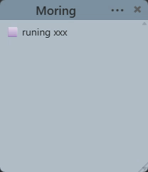
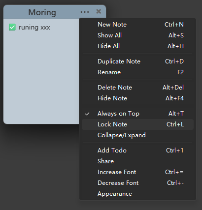
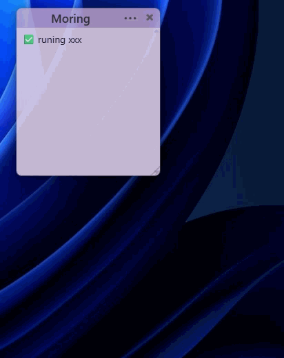
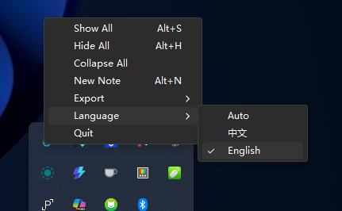
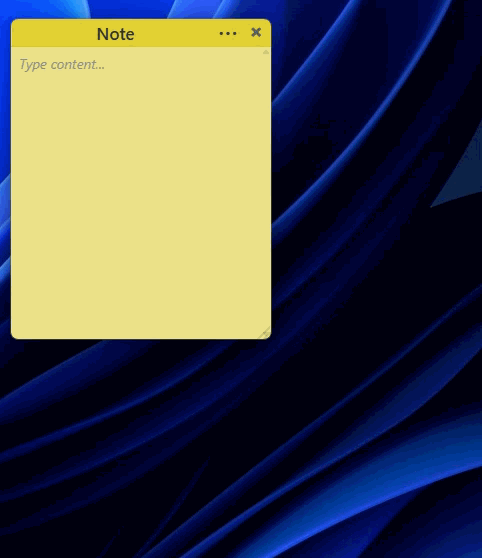

A Picture Is Worth a Thousand Words
Real screenshots, what you see is what you get

Right-Click Context Menu

Appearance Settings

Share Card

System Tray Menu

Full Feature Demo
Lightweight, frameless, and every note is an independent window. Drag freely, style instantly, track todos, share cards — your desktop, your way.

Not just sticky notes — a complete desktop productivity tool
Each note is a standalone transparent frameless window. Drag, resize, place anywhere you want.
Switch colors instantly. Opacity 10%–100%, font size 8px–72px, fully adjustable.
Always-on-top, lock to prevent accidental edits, auto-snap to other notes when dragging.
Ctrl+1 Insert checkboxes with a shortcut. Click to toggle: Todo → In Progress → Done, with celebration effects.
One-click Markdown export, generate beautiful share cards (gradient + progress bar + encouragement), save as PNG or copy to clipboard.
(Export daily notes to GPT for review, reflection, and daily growth ✦)
Hide / Show / Collapse all notes, create new, export, switch language — one click on the tray icon to show all.
Real screenshots, what you see is what you get

Right-Click Context Menu

Appearance Settings

Share Card

System Tray Menu
Full Feature Demo
Keyboard-first, maximum efficiency
| Action | Shortcut |
|---|---|
| New Note | Ctrl + N |
| Duplicate Note | Ctrl + D |
| Rename | F2 |
| Pin / Unpin | Alt + T |
| Lock / Unlock | Ctrl + L |
| Add Todo | Ctrl + 1 |
| Font Size | Ctrl + = / - |
| Opacity | Ctrl + Shift + ↑ / ↓ |
| Show All Notes | Alt + S |
Tech Stack
Free, open-source, lightweight. Download the installer and get started in seconds.